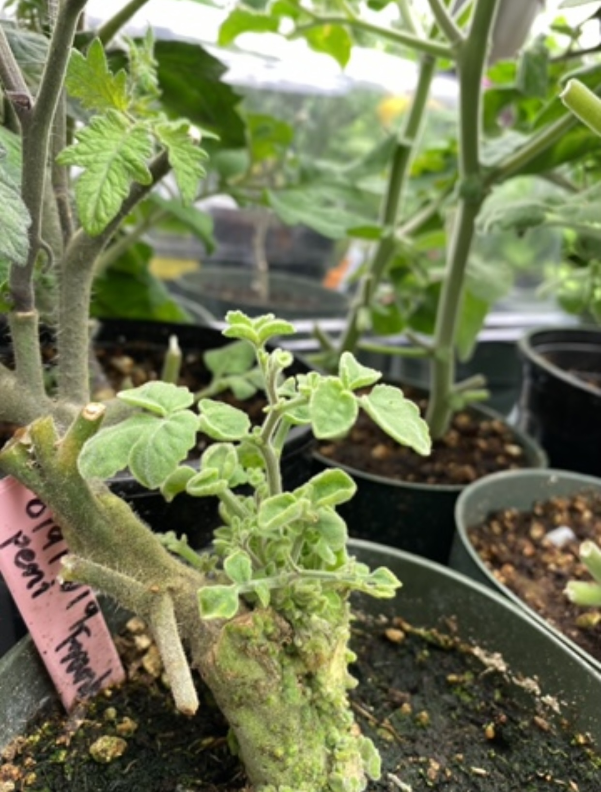
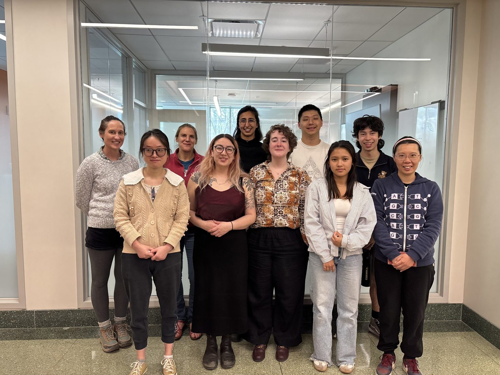

Cellular Communication and the Biology of Regeneration
We investigate how cells coordinate tissue repair, restore vascular connectivity, and establish functional connections across graft junctions.
We study how plants repair damaged tissues, exchange signals between cells and organs, and use communication to respond to their environments. We apply these discoveries to develop programmable plant systems and resilient crops.
Explore our research ↗
Regeneration at a tomato graft junctionFrom cellular regeneration to long-distance signaling and programmable plant systems.
We investigate how cells coordinate tissue repair, restore vascular connectivity, and establish functional connections across graft junctions.
We discover mobile RNAs and other signals that connect distant tissues, and study how information is transmitted, interpreted, and integrated across the plant.
We reprogram signaling networks to create responsive plant systems, develop novel rootstocks, and investigate how grafting-induced vigor can enhance crop resilience.
We combine grafting, genetics, genomics, imaging, physiology, and synthetic biology to understand plant communication from individual cells to whole organisms. Our translational work explores new rootstocks for crop resilience, grafting-induced vigor, and programmable environmental responses.
Selected publications will be added as the site develops.

School of Integrative Plant Science, Cornell University. The Frank Lab brings together scientists studying regenerative biology, local and long-distance signaling, grafting, and programmable plant systems.

News from the Frank Lab, including new publications, research highlights, and opportunities, will appear here. Check back for updates.
We welcome conversations with prospective students, postdoctoral researchers, and collaborators interested in plant regeneration, signaling, grafting, and synthetic biology.
Contact the lab ↗Please contact us about current opportunities; availability is not implied.